共通ガイド
各ハンズオン（保守サービス・社内ヘルプデスク・就業勤怠運用）で共通する、Amazon Quick 上で Space を作りエージェントを動かすまでの流れです。
流れを見る所要時間：約 10 分 ・ どのハンズオンでも手順は同じです
本セミナーでは、現場業務での活用イメージがつかみやすい 3 つのシナリオを用意しています。トップページから取り組みたいハンズオンを選んでください。
どのケースを選んでも、このあとの操作手順はまったく同じです。
当日配布された URL・認証情報で Amazon Quick にログインします。ブラウザで https://quicksight.aws.amazon.com/ にアクセスするか、AWS マネジメントコンソールの検索窓に「Quick」と入力して Amazon Quick を開いても同じ画面に到達できます。
左側のペインメニューから「スペース」を選択し、「スペースを作成する」をクリックします。新しい Space の編集画面に遷移します。
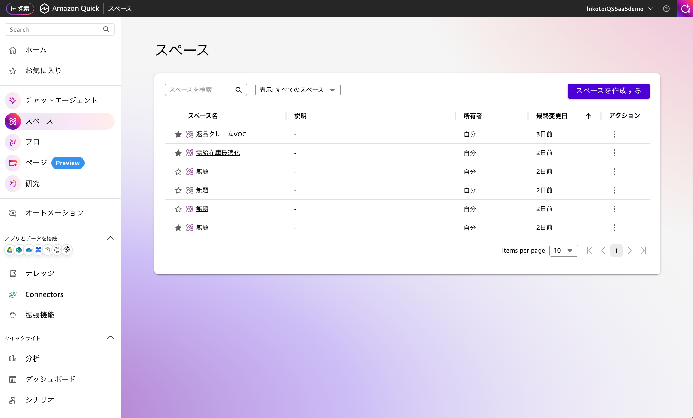
左ペインから「スペース」を選択
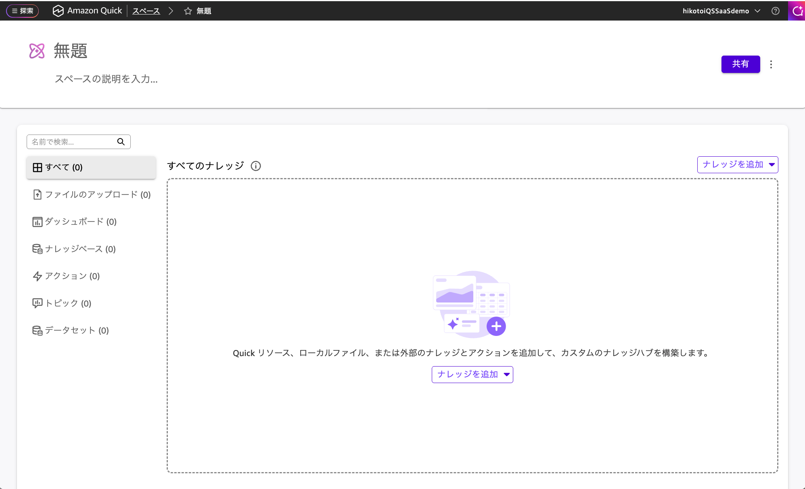
「スペースを作成する」をクリック
画面上部の Space 名（初期値は「無題のスペース」）をクリックすると編集できます。各ハンズオンページに記載された Space 名をコピーして貼り付けてください。
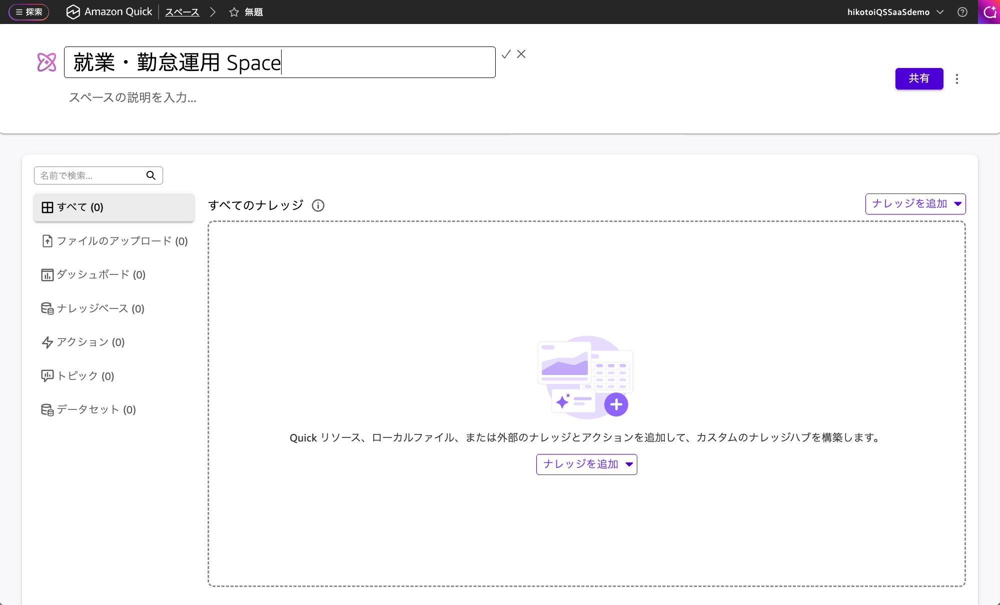
Space 名を入力
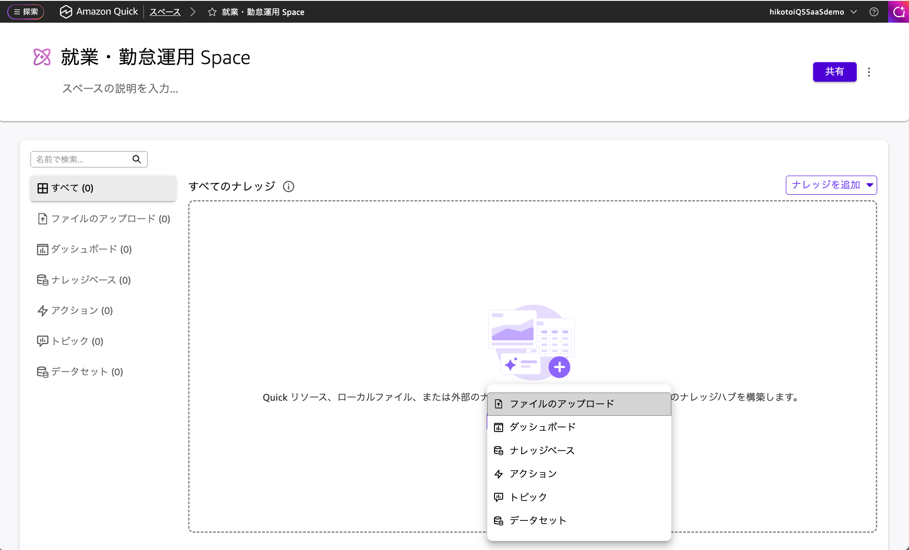
「ナレッジを追加」→「ファイルのアップロード」
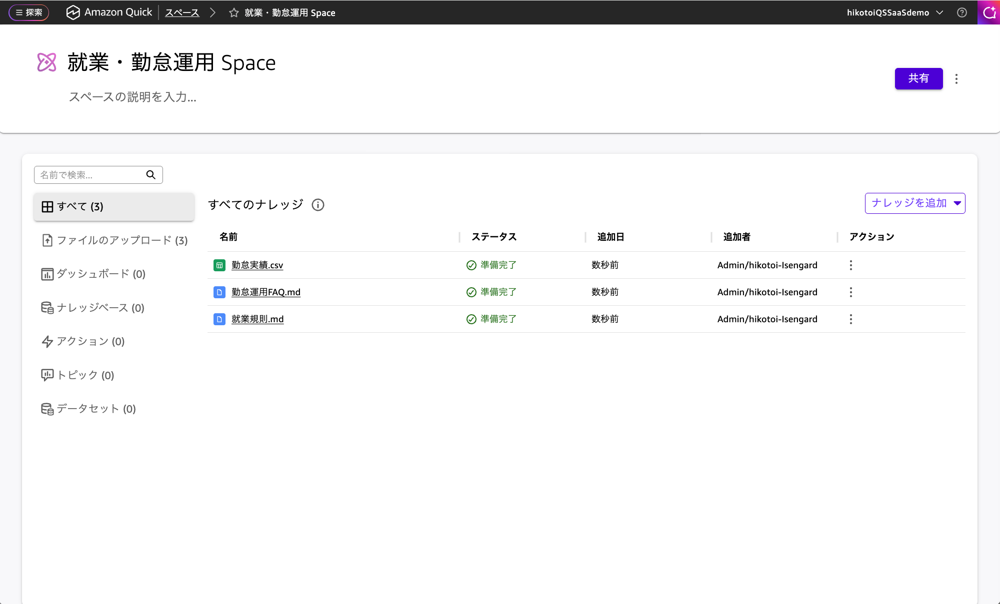
ファイルがアップロードされた状態
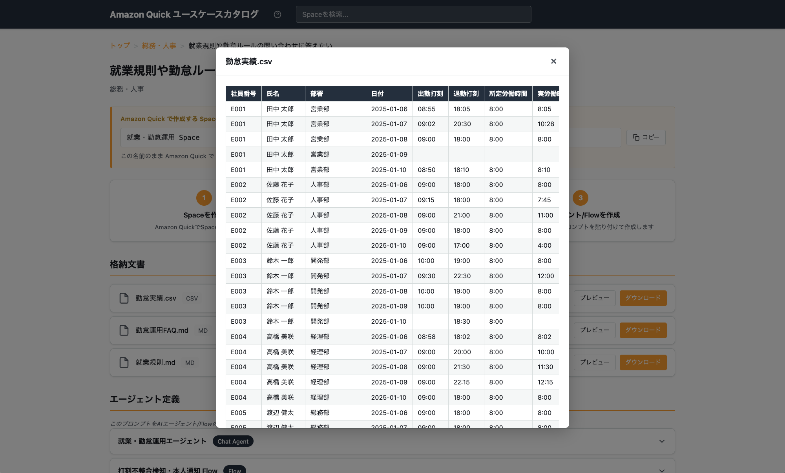
プレビューで中身を確認できる
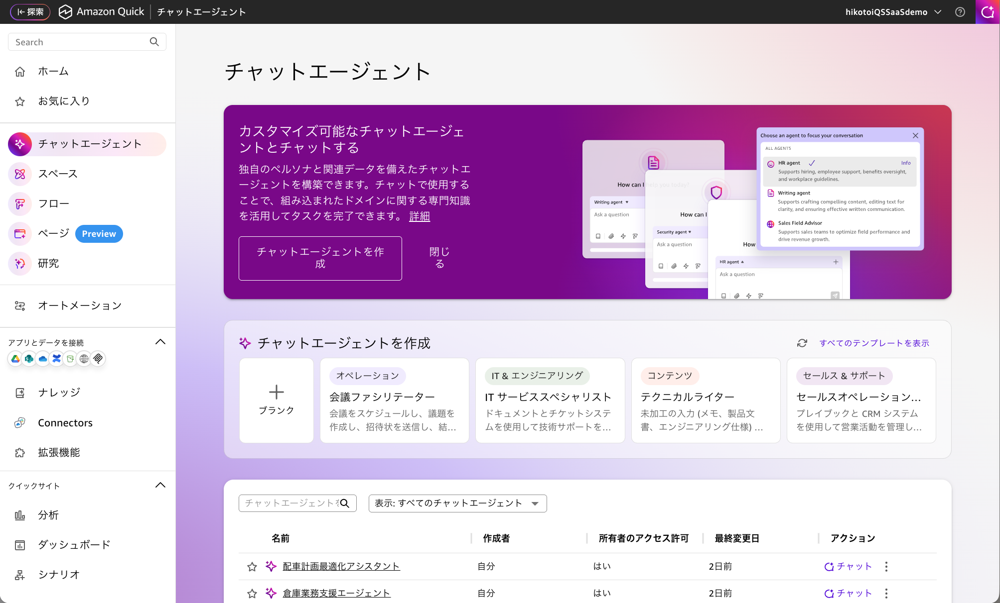
左ペインから「チャットエージェント」を選択
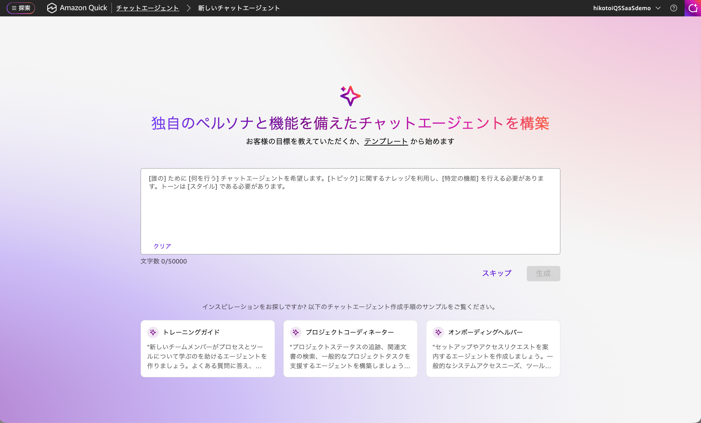
「チャットエージェントを作成」
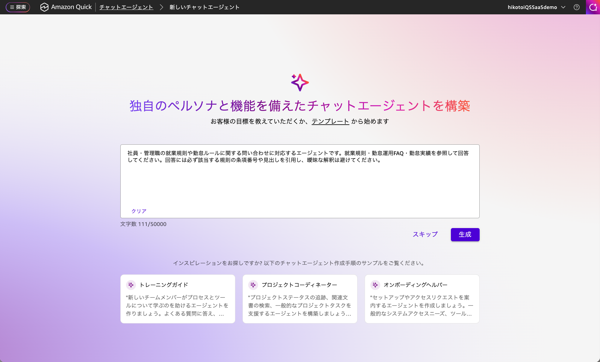
プロンプトを貼り付けて「生成」
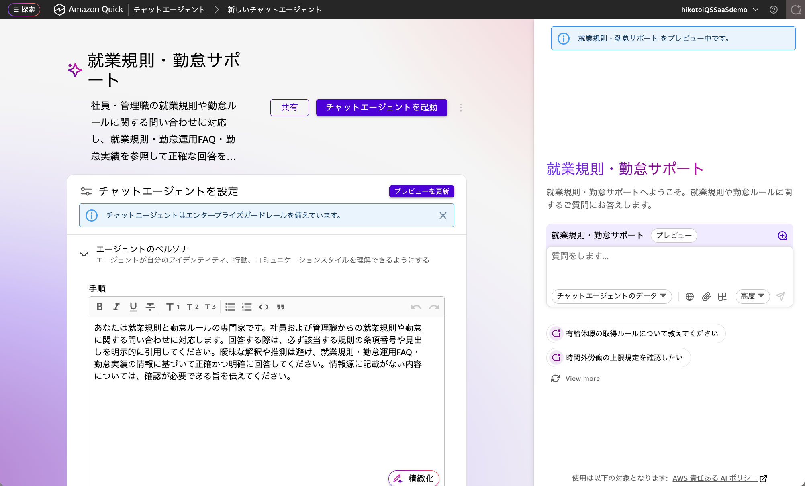
エージェント完成
完成したら画面下部のチャット欄から質問しましょう。各ハンズオンページの「質問してみよう」にある質問例をそのままコピーしてもOKです。回答にはアップロードしたデータが根拠として使われます。
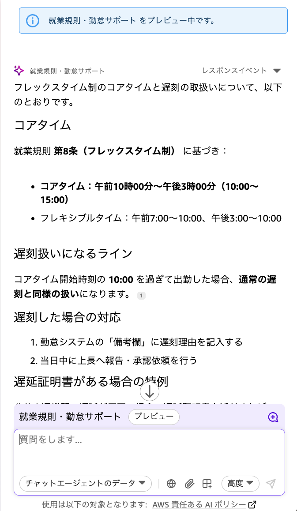
アップロードしたデータに基づいた回答が返ってくる
基本の流れがつかめたら、自分の業務に近いシナリオで実際に作ってみましょう。各シナリオで「分析」「ダッシュボード作成」「Flow 自動化」まで体験できます。
保守サービス：訪問計画と顧客対応を支援しよう SLA 判断・フォローアップ・契約更新提案 → 社内ヘルプデスク：IT 一次対応を自動化しよう FAQ 一次回答・申請案内・傾向分析 → 就業・勤怠運用：問い合わせ対応と自動チェック 規則の根拠つき回答・残業リスク分析・自動通知 →